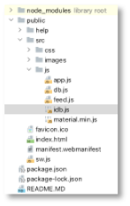
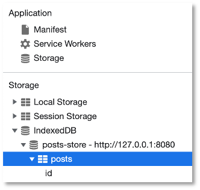
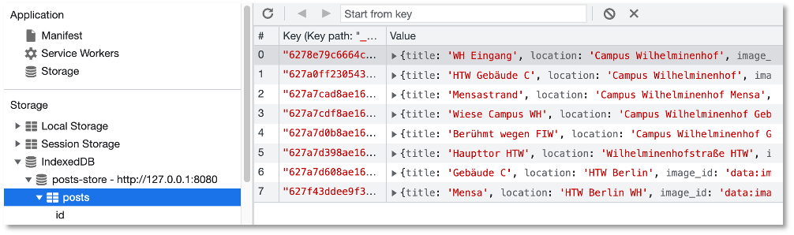
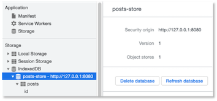

IndexedDB¶
Hint
Aktueller Stand vor IndexedDB:
- Frontend
- Backend
- Collection post
- Collection post.files
- Collection post.chunks
Wir haben nun ein funktionierendes Backend (siehe hier) und verschiedene Ressourcen in statischen und dynamischen Caches gespeichert. Unsere HTW-Insta-Anwendung sieht nun so aus. Diese Ressourcen lagen als Dateien vor, die wir über eine URL abrufen konnten, also *.html-, *.js-, *.css- Dateien und Bilder. Jetzt wollen wir dynamisch Daten speichern, sogenannten dynamischen Inhalt. Diese Daten können ausgelesen und den unterschiedlichen Dateien hinzugefügt bzw. durch Dateien hinzugefügt werden. Wir können uns das wirklich wie eine Datenbank vorstellen, aus der wir diese Daten ziehen, nur dass diese Datenbank nicht extern in einem Datenbankmanagementsystem verwaltet wird, sondern durch den Browser. Wir haben unter den Developer Tools diese "Datenbank" vielleicht schon im Application-Reiter auf der linken Seite unter Storage entdeckt. Es handelt sich um die IndexedDB.
Bei der IndexedDB handelt es sich um eine transaktionsbasierte Datenbank, die Schlüssel-Werte-Paare im Browser speichert. Transaktionsbasiert bedeutet dabei, dass ganze Transaktionen ausgeführt werden, die aus einzelnen Aktionen bestehen können. Wenn nur eine Aktion einer Transaktion fehlschlägt, dann wird keine der Aktionen dieser Transaktion ausgeführt. Das bedeutet, eine Transaktion wird entweder ganz oder gar nicht ausgeführt. Unsere Transaktionen bestehen aber typischerweise nur aus wenigen Aktionen, das Transaktionskonzept spielt deshalb keine große Rolle.
Wir können beliebige Daten in die IndexedDB speichern, also auch Bilder, Dateien, Arrays, Objekte, usw. Ein wichtiger Unterschied zum Lokal Storage ist, dass wir sowohl über den "normalen" JavaScript-Thread unserer Webanwendung als auch über den Service Worker auf die IndexedDB zugreifen können.
Das Backend nutzen¶
Ehe wir aber mit der IndexedDB loslegen, wollen wir zunächst einige Anpassungen in unserer HTW Insta-Anwendung durchführen, damit sich unsere Mühen mit dem Backend und dem Frontend auch gelohnt haben.
Wir wollen die Daten für unsere Cards aus der Datenbank holen. Dazu muss das Backend gestartet sein! Öffnen Sie die feed.js. Die fetch-Funktion passen wir nun so an, dass sie auf unser Backend zugreift (den Zugriff auf httpbin.org benötigen wir nicht mehr):
fetch('http://localhost:3000/posts')
.then((res) => {
return res.json();
})
.then((data) => {
updateUI(data);
});
Wir nutzen also den GET http://localhost:3000/posts-Endpunkt, um uns alle Daten aus der Datenbank zu holen. Wir fügen einen Funktionsaufruf einer neuen Funktion updateUI(data) ein. Diese Funktion macht nichts weiter, als die createCard()-Funktion für jeden einzelnen Datensatz aufzurufen:
function updateUI(data) {
for(let card of data)
{
createCard(card);
}
}
Die createCard()-Funktion war allerdings bis jetzt parameterlos. Nun übergeben wir unseren Datensatz und nutzen die einzelnen Werte daraus für die Erstellung einer Card:
1 2 3 4 5 6 7 8 9 10 11 12 13 14 15 16 17 18 19 20 21 22 23 | |
Für das Darstellen der Bilder benötigen wir ein Image-Objekt, dem wir als Wert des src-Attributes den base64-String aus image_id übergeben. Dann wird der src-Wert des Image-Objektes als eine URL für das Hintergrundbild einer Card verwendet (Zeilen 6-8).
Warning
Beachten Sie, dass wir alle Ressourcen cachen. Das bedeutet, dass sich Änderungen an z.B. der feed.js gar nicht automatisch in der Webanwendung auswirken, da ja die feed.js aus dem Cache verwendet wird. Damit wir die Änderungen auch testen können, müssen wir den Cache neu befüllen. Wir haben dazu Cache-Versionen eingeführt:
1 2 3 4 5 6 7 8 9 10 11 12 13 14 15 16 17 18 19 20 21 22 23 24 25 26 27 28 29 30 31 32 33 34 35 36 37 38 39 40 41 42 43 44 45 46 47 48 49 50 51 52 53 54 55 56 57 58 59 60 61 62 63 64 65 66 | |
CACHE_VERSION) und dann das Aktivieren des neuen Service Workers!
Je nachdem, welche Daten Sie alle in Ihrer Datenbank haben, sieht die Anwendung nun so aus:
Beachten Sie auch, dass sowohl der statische als auch der dynamische Service-Worker-Cache funktioniert. Das heißt, wenn Sie Ihre Anwendung offline schalten, dann ist immer noch alles da.
Warum dynamische Inhalte "cachen"?¶
Wenn wir nun bereits alle Ressourcen (html-Dateien, js-Dateien, css-Dateien und Bilddateien) im Service-Worker-Cache gespeichert haben (statisch und oder dynamisch), dann stellt sich natürlich die Frage, warum wir überhaupt noch eine In-Browser-Datenbank verwenden sollen und wollen. Die beiden Terme, die dabei unterschieden werden, sind dynamic caching und caching dynamic content, also dynamische Inhalte speichern. Beides hat caching im Namen und dynamic, ist auch nicht so viel anders.
Dynamic caching haben wir bis jetzt durchgeführt. Die Webanwendung stellt eine Anfrage an den Webserver, der Service Worker schaltet sich jedoch als Proxy dazwischen. Wenn der Service Worker die Anfrage selbst aus dem Cache beantworten kann, wird sie gar nicht erst an den Webserver weitergeleitet. Wenn nicht, dann geht die Anfrage zum Webserver, der schickt eine Antwort zurück, die der Service Worker aber auch in seinen dynamischen Cache ablegt, um sie beim nächsten Mal aus dem Cache beantworten zu können. Beim dynamic caching werden also dynamisch Ressourcen im Cache abgelegt.
Beim Speichern von dynamischen Inhalten mithilfe der In-Browser-IndexedDB spielt die Fetch-API keine Rolle. es geht auch nicht darum, Ressourcen, wie html-, css, oder js-Dateien zu speichern. Vielmehr werden in der Datenbank strukturierte (aber auch unstrukturierte) Daten, wie JSON- oder XML-Daten gespeichert. Prinzipiell geht es um das Speichern von Schlüssel-Werte-Paaren. Primär handelt es sich bei den Daten in der IndexedDB aber um dynamische, sich häufig ändernde Daten - dynamic content. Während wir beim dynamic caching eher davon ausgehen, Ressourcen zu speichern, die sich nicht häufig ändern, ist das bei der IndexedDB anders. Dort gehen wir davon aus, dass sich diese Daten häufig ändern. Ein weiterer Unterschied liegt darin, dass wir mit dynamic caching stets nur vollständige Responses speichern, also eine Ressource ganz oder gar nicht. Das muss in der IndexedDB nicht sein. Wir könnten in der IndexedDB z.B. von einem Post immer nur post.title und post.location speichern, nicht aber post.image_id (oder umgekehrt). Außerdem lassen sich die Daten in der IndexedDB auch ändern oder in ein anderes Format umwandeln. Wir haben in Bezug auf die gespeicherten Ressourcen in der IndexedDB mehr Flexibilität.
Das idb-Paket¶
Da die API zur IndexedDB sehr umständlich zu handhaben ist und viele Callbacks erfordert, wird die Verwendung anderer Pakete empfohlen, die sich als Wrapper um die API legen und die Verwendung von Promises ermöglichen. Oft wird z.B. Dexie verwendet. Wir verwenden zunächst den idb-Wrapper von Jake Archibald. Ich verwende im Folgenden dieses idb.js, das Sie sich hier herunterladen und einfach in Ihren /public/src/js-Ordner kopieren können.

Diese Datei binden wir zunächst über die index.html-Datei ein:
107 108 109 110 111 112 113 | |
Im Service Worker haben wir normalerweise keinen direkten Zugriff auf die Skripte und Dateien unserer Webanwendung. Dafür gibt es jedoch die importScripts()-Anweisung. Wir importieren damit unsere idb.js-Datei in den Service Worker und wir laden diese Datei auch in den Cache:
1 2 3 4 5 6 7 8 9 10 11 12 13 14 15 16 17 18 19 20 21 22 23 24 25 26 27 28 29 30 31 32 33 34 35 36 37 38 39 40 41 42 43 44 45 46 47 48 49 50 51 52 53 54 55 56 57 58 59 60 61 62 63 64 65 66 67 68 | |
Wir führen zunächst noch einige Änderungen in unserer Service Worker Datei sw.js durch. Zunächst lagern wir alle Dateien, die wir in dem statischen Cache speichern wollen, in ein eigenes Array STATIC_FILES aus:
1 2 3 4 5 6 7 8 9 10 11 12 13 14 15 16 17 18 19 20 21 22 23 24 25 26 27 28 29 30 31 | |
Das hat keine weitere Bedeutung und strukturiert nur den Code besser. Wichtiger aber ist es, die Behandlung des fetch-Ereignisses zu überdenken. Derzeit sieht die Behandlung so aus:
1 2 3 4 5 6 7 8 9 10 11 12 13 14 15 16 17 18 19 20 21 22 23 | |
Das heißt, dass jeder Request überprüft wird, ob er aus dem Cache beantwortet werden kann und wenn ja, dann wird die response aus dem Cache zurückgegeben (Zeile 10). Wenn nicht, dann wird der Request an den Webserver weitergeleitet, die Antwort in den dynamischen Cache gelegt und an die Webanwendung weitergereicht (Zeilen 12-20). Das betrifft jeden Request. Wir wollen nun aber die Anfragen, die an http//localhost:3000/posts gestellt werden, anders behandeln. Dazu speichern wir dieses url und prüfen, ob diese Anfrage an diese URL geht. Wenn ja, behandeln wir sie anders, wenn nicht, dann so, wie bisher:
1 2 3 4 5 6 7 8 9 10 11 12 13 14 15 16 17 18 19 20 21 22 23 24 25 26 27 28 29 30 31 32 33 | |
Wie wir diese Anfragen an http://localhost:3000/posts behandeln, schauen wir uns gleich an. Wir haben jetzt nur eine Unterscheidung hinzugefügt, ob die Anfrage an http://localhost:3000/posts geht oder nicht. Wenn ja, leiten wir die Anfrage an den Webserver weiter (Zeile 9) und geben die Response zurück (Zeile 12). Wenn nicht, dann behandeln wir die Anfrage wir bisher. Zunächst erstellen wir aber die IndexedDB.
Erstellen und Öffnen einer IndexedDB¶
Nachdem wir für den Service Worker die importScripts()-Anweisung kennengelernt haben, könnten wir nun verschiedene Skripts erstellen und diese in den Service Worker einbinden, also z.B. ein Skript für die Behandlung des fetch-Ereignisses und ein Skript für die Verwaltung der IndexedDB. Wir lassen aber hier alles in der sw.js und erstellen und öffnen zunächst eine neue IndexedDB, die wir posts-store nennen. Dies geht mit der openDB()-Funktion aus dem idb-Paket (siehe README.md):
1 2 3 4 5 6 7 8 9 10 11 12 13 14 15 16 17 18 19 20 21 22 23 24 25 26 27 28 29 30 31 32 33 34 35 36 37 38 39 40 41 42 43 44 45 46 47 48 49 50 51 52 53 54 55 56 57 58 59 60 61 62 63 64 65 66 67 68 69 70 71 72 73 74 75 76 77 78 79 80 81 82 83 84 85 86 87 88 89 90 91 92 | |
Wir haben nun eine "eigene" IndexDB namens post-store erstellt. Der store darin heißt posts. In diesem store speichern wir alle Daten der Posts. Mit der Eigenschaft keyPath definieren wir den Schlüssel für diesen store. Über diesen Schlüssel gelangen wir an unserer Daten. Mithilfe der Funktion createIndex() verbinden wir das Attribut _id unserer Posts-Datensätze mit diesem Schlüssel. Für uns bedeutet das schlicht, dass _id der Schlüssel sowohl in der IndexedDB als auch in unserer MongoDB für alle Posts ist. Wenn wir die Anwendung nun ausführen, dann sehen wir in den Developer Tools im Reiter Application links im Menü unter Storage --> IndexedDB diese Datenbank.

Diese ist noch leer, wir machen ja noch nichts damit.
Behandlung fetch-Event anpassen¶
Nun passen wir die Behandlung des fetch-Ereignisses für die Anfragen an http://localhost:3000/posts an. Wir haben derzeit folgende Ausgangssituation (siehe oben):
60 61 62 63 64 65 66 67 68 69 70 71 72 73 74 75 76 | |
Wir behandeln die Anfrage an das Backend nun wie folgt:
60 61 62 63 64 65 66 67 68 69 70 71 72 73 74 75 76 77 78 79 80 81 82 83 84 85 86 87 88 89 | |
- Wir clonen zunächst die Response, da sie nur einmal "verbraucht" werden kann (Zeile
70). - Dann wird diese geclonte Response in ein JSON umgewandelt (Zeile
71). - Dieses JSON beschreibt ein JavaScript-Objekt mit den Schlüsseln
id,title,locationundimage- so, wie es unser Backend zurückgibt. Wir gehen nun in einerfor-Schleife durch alle diese Schlüssel-Werte-Paare durch (Zeile73). - In Zeile
75greifen wir auf das Promise-Objekt zu, das die Datenbank verwaltet, die wir zuvor mittelsopenDB()geöffnet haben. - Dieser Promise verwaltet sich selbst. Das bedeutet, dass
dbPostsgenau für die von uns geöffnete IndexedDB steht. Wir können nur nicht erneutdbbenutzen, deshalbdbPosts(Zeile76). - Als erstes erstellen wir eine Transaktion. Wie bereits gesagt, ist die IndexedDB transaktionsbasiert. Jede Operation ist somit eine Transaktion. Wir erstellen eine Transaktion
tx(Zeile77). Diese Transaktion wird durch die Funktiontransaction()erzeugt. Die Funktion erwartet zwei Parameter:- der erste Parameter beschreibt den
store, auf den die Transaktion zugreift (bei unsposts). - der zweite Parameter beschreibt, ob wir nur lesend auf diesen
storezugreifen wollen ('readonly') oder auch schreibend ('readwrite').
- der erste Parameter beschreibt den
- Nach der Definition der Transaktion muss für die Transaktion nochmal die Eigenschaft
storeaufgerufen werden (siehe README.md des idb-Paketes). Darin steht aber auch, dass mantx.objectStore(storeName)aufrufen soll, wenn die Transaktion mehrere Stores verwendet. Deshalb rufen wir einfach immertx.objectStore(storeName)auf, da das auch funktioniert, wenn nur einstoreverwendet wird (Zeile78). - In Zeile
79werden die einzelnen Schlüssel-Werte-Paare dann in die IndexedDB gespeichert.
Nach Ausführen der Anwendung sieht die IndexedDB nun (je nachdem, welche Daten Sie bereits in Ihrer Datenbank gespeichert haben) so aus:

Wir haben nun die IndexedDB des Browsers mit unseren Datensätzen befüllt. Nun überlegen wir uns, wie wir diese Datensätze aus der IndexedDB auslesen können, wenn wir sie dort gespeichert haben und dann gar nicht mehr an das Backend Anfragen schicken müssen.
Datensätze aus der IndexedDB auslesen¶
Zunächst einmal stellen wir fest, dass ein geeigneter Ort, die Datensätze aus der IndexedDB auszulesen, die feed.js ist, da dort ja die Daten zum Erstellen der Cards verwendet werden.
Schauen wir uns deshalb dort die fetch()-Funktion an (siehe auch Das Backend nutzen).
1 2 3 4 5 6 7 | |
Wir stellen dort eine Anfrage an das Backend und verwenden die vom Backend übergebenen Daten (data), um die Cards zu erstellen (updateUI(data)). Das heißt, dass wir nun die IndexedDB auch in feed.js verwenden wollen - also in unserer "Webanwendung" (und nicht "nur" im Service Worker). Das heißt aber auch, dass wir nun auch in der Webanwendung die IndexedDB öffnen müssen usw. und wir dort ähnlichen Code hätten, wie auch bereits im Service Worker. Um doppelten Code zu vermeiden, lagern wir deshalb einigen Code in eine db.js aus. Wir bewegen (move) zunächst den Code zum Öffnen der IndexedDB aus der sw.js nach db.js:
1 2 3 4 5 6 7 8 9 10 11 12 13 | |
Dann erstellen wir uns in der db.js eine Funktion writeData(), die in die IndexedDB die Daten schreibt. Dazu bewegen wir den folgenden Block aus der sw.js nach db.js:
1 2 3 4 5 6 7 8 9 10 11 12 13 14 15 16 17 18 19 20 21 22 23 24 25 26 27 28 29 30 31 32 33 34 35 36 37 38 39 40 41 42 43 44 45 46 | |
Die db.js sieht dann so aus:
1 2 3 4 5 6 7 8 9 10 11 12 13 14 15 16 17 18 19 20 21 22 23 | |
Beachten Sie, dass aus store.put(data[key]) nun store.put(data) wurde, da wir hier keinen key verwalten. Damit die writeData()-Funktion möglichst generisch ist, übergeben wir als Parameter den store (posts) und wir müssen natürlich auch data übergeben:
1 2 3 4 5 6 7 8 9 10 11 12 13 14 15 16 17 18 19 20 21 22 23 | |
Wichtig ist, dass wir das db-Promise-Objekt in writeData() nun zurückgeben müssen, d.h. wir benötigen ein return in Zeile 16. Nun müssen wir diese db.js natürlich importieren, sowohl in den Service Worker als auch in die Webanwendung (da sie ja feed.js zur Verfügung stehen soll). Beide Importe müssen hinter dem Import der idb.js stehen, da die db.js Funktionen der idb.js verwendet.
1 2 3 4 5 6 7 8 | |
sowie für die /public/src/js/*.js-Datein in der index.html:
107 108 109 110 111 112 113 114 | |
In die sw.js setzen wir noch den Aufruf von writeData('posts', data[key]) an der richtigen Stelle ein (jetzt wieder data[key], da das hier für einen Post steht):
54 55 56 57 58 59 60 61 62 63 64 65 66 67 68 69 70 71 72 73 74 75 | |
Übrigens: Da wir für die Behandlung des fetch-Events nun zwischen den Aufrufen an den Webserver und an das Backend unterscheiden, werden die Requests der Backend-Aufrufe nun nicht mehr im (dynamischen) Cache gespeichert. Das bedeutet, dass unsere Anwendung in dem derzeitigen Zustand offline nicht funktioniert, da dann die Cards nicht angezeigt werden. Deshalb wollen wir ja in die feed.js nun die Abfrage an die IndexedDB einbauen, damit die Daten von dort geholt werden können.
Dazu erweitern wir die db.js zunächst um eine readAllData(store)-Funktion, in der wir alle Daten aus der IndexedDB auslesen.
1 2 3 4 5 6 7 8 9 10 11 12 13 14 15 16 17 18 19 20 21 22 23 24 25 26 27 28 29 30 31 32 33 | |
Im Gegensatz zur writeData()-Funktion müssen wir beim Lesen der Daten (readonly) nicht darauf warten, dass die Transaktion vollständig abgearbeitet ist (tx.done), sondern wir können die Funktion mit dem Promise verlassen, in dem alle Daten zur Verfügung gestellt sind. Rein lesende Transaktionen können auf der Datenbank keinen "Schaden" anrichten. Deshalb können wir auf das tx.done verzichten. Alles andere ist im Prinzip wie bei writeData(), nur dass wir nun nur readonly Zugriff haben und die getAll()-Funktion aufrufen.
Diese readAllData()-Funktion bauen wir nun in die feed.js ein. Dazu betrachten wir die fetch-Funktion darin zunächst noch einmal:
55 56 57 58 59 60 61 62 | |
Diese Funktion führt ein GET auf das Backend durch und holt sich von dort alle Daten. Wir ändern diese Funktion zunächst leicht, um zu erkennen, wann die Daten tatsächlich vom Backend geholt wurden.
55 56 57 58 59 60 61 62 63 64 65 | |
Dazu erstellen wir uns eine Variable networkDataReceived, die auf true gesetzt wird, falls wir die Daten vom Backend holen. Dazu eine passende Ausgabe auf die Konsole.
Nun erweiteren wir die feed.js um das Lesen der Daten aus der IndexedDB. Dazu fügen wir folgende Anweisung hinzu:
55 56 57 58 59 60 61 62 63 64 65 66 67 68 69 70 71 72 73 74 75 | |
In Zeile 67 überprüfen wir zunächst, ob der Browser überhaupt die IndexedDB-API unterstützt. Wenn ja, dann lesen wir mithilfe der readAllData()-Funktion aus der db.js alle Daten aus dem posts-Store. Sollten die Daten nicht vom Backend geholt worden sein (sonst wäre networkDataReceived === true), dann werden die aus der IndexedDB geholten Daten verwendet, um die Cards zu erstellen (updateUI(data) in Zeile 72).
Das heißt, wir haben hier eine network first-Strategie implemntiert. Wenn der Zugriff auf das Backend möglich ist, dann werden die Daten von dort geholt und auch dazu verwendet, um die Cards zu erstellen. Nur für den Fall, dass das Netzwerk nicht verfügbar ist, werden die aus der IndexedDB geholten Daten verwendet, um die Cards zu erstellen.
Wir testen diese Implementierung. Achten Sie darauf, die Versionsnummern der Caches in der sw.js zu ändern, denn wir haben ja die index.html und die feed.js geändert. Diese Änderungen würden nicht wirksam sein, ohne Versionsänderungen der Caches, da ansonsten die Dateien aus dem statischen Cache und nicht vom Webserver gelesen würden.
- Stellen Sie auch sicher, dass Ihr Backend gestartet ist.
- Reloaden Sie die Anwendung im Browser.
skipWaitingden neuen Service Worker- checken, ob der neuen statische Cache unter
Cache --> Cache-Storageverwendet wird - checken, ob die IndexedDB befüllt ist (sollte durch
writeData()im Service Worker passieren) - In der Console steht
From backend ...mit dem dazugehörigen Data-Array - Schalten Sie im Service Worker die Anwendung nun offline und reloaden Sie die Anwendung
- In der Console erscheint
Fetch failed loading GET http://localhost:3000/postsmit dem dazugehörigen Fehler, aber es erscheint auchFrom cache ...mit dem dazugehörigen Daten-Array. Es werden allecardserstellt und angezeigt.
Die Anwendung ist nun auch insofern offline-fähig geworden, dass nun die dynamischen Daten in die IndexedDB geschrieben und aus der IndexedDB gelesen werden.
Löschen der IndexedDB¶
Wir schreiben unsere Daten in die IndexedDB mithilfe der put()-Funktion (siehe Funktion writeDate() in der db.js und darin store.put(data)). Diese Funktion schreibt ein Schlüssel-Werte-Paar in den entsprechenden store. Existiert der übergebene Schlüssel noch nicht, wird das Schlüssel-Werte-Paar der IndexedDB hinzugefügt. Existiert der Schlüssel bereits, wird der alte Wert mit dem neuen Wert überschrieben. Dadurch, dass es sich um lauter Schlüssel-Werte-Paare in der IndexedDB handelt, werden "alte" Schlüssel-Werte-Paare jedoch nicht gelöscht. Angenommen, wir rufen die writeData()-Funktion für alle Datensätze auf, die in unserer Datenbank gespeichert haben und angenommen, wir haben aus dieser Datenbank einen Datensatz gelöscht, der aber noch in der IndexedDB gespeichert ist. Dann würde dieser Datensatz auch in der IndexedDB verbleiben.
Wir schreiben uns deshalb eine Funktion, die zunächst alle Daten in der Datenbank löscht. Diese führen wir dann immer aus, bevor wir die neuen Daten hinzufügen. In der db.js fügen wir dazu die Funktion clearAllData() hinzu:
1 2 3 4 5 6 7 8 9 10 11 12 13 14 15 16 17 18 19 20 21 22 23 24 25 26 27 28 29 30 31 32 33 34 35 36 37 38 39 40 41 42 43 | |
Diese rufen wir nun in der sw.js auf, bevor wir die neuen Daten in die IndexedDB schreiben:
54 55 56 57 58 59 60 61 62 63 64 65 66 67 68 69 70 71 72 73 74 75 76 77 78 79 | |
Die Funktion clearAllData() gibt ein Promise-Objekt zurück. Nach dem erfolgreichen Löschen der Datenbank, können die neuen Daten hinzugefügt werden. Deshalb wird das komplette clonedResponse-Promise-Objekt in die then()-Funktion des clearAllData()-Promise-Objektes geschoben. Aus dieser Verschachtelung können wir aber auch eine .then()-Verkettung machen, die vielleicht besser zu lesen ist (dann aber nicht das return vor clonedResponse.json(); vergessen):
54 55 56 57 58 59 60 61 62 63 64 65 66 67 68 69 70 71 72 73 74 75 76 77 78 79 | |
Löschen einzelner Einträge¶
Es können auch einzelne Einträge aus der IndexedDb gelöscht werden. Der Zugriff auf die Datensätze erfolgt über den keyPath _id (siehe Erstellen der Datenbank und dort openDB()). Wir fügen der db.js eine weitere Funktion deleteOneData() hinzu. Diese Funktion benötigt als Parameter neben dem store auch die _id des Datensatzes, den wir löschen wollen.
45 46 47 48 49 50 51 52 53 54 55 56 | |
Wir geben das promise-Objekt db nicht zurück, sondern "verwerten" es gleich hier, indem wir nach dem Löschen eine Ausgabe auf die Konsole erzeugen.
Das Testen dieser Funktion in unserer Anwendnung ist derzeit nur "Spielerei". Wir werden diese Funktion aber später noch sinnvoll einsetzen. Beachten Sie, dass Sie nach Änderungen an der IndexedDB diese zunächst "refreshen" müssen (Button Refresh database - siehe Abbildung).

Success
Wir können nun die In-Browser-Datenbank IndexedDB verwenden, um dynamische Daten zu speichern, auszulesen und zu löschen. Somit bleibt unsere Anwendung auch dann noch aktiv, auch wenn das Backend (und/oder die Datenbank) nicht erreichbar ist. Die IndexedDB kann für alle Arten von Schlüssel-Werte-Paaren verwendet werden. Weitere Informationen finden Sie unter IndexedDB API.